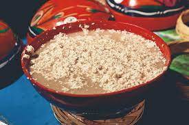

INGREDIENTES
3 cucharadas de cacao en polvo
2 huesos de mamey
1 kg de maíz
4 tazas de agua
Azúcar al gusto
Cubos de hielo
PREPARACION
Primeramente lavamos el mamey.
Luego coceremos nuestro maíz hasta que esté blando, para finalmente molerlo.
Seguido tostamos el mamey y lo agregamos junto al cacao y el maíz.
Agregamos agua con azúcar al gusto a la mezcla del maíz, el cacao y el mamey, mezclamos muy bien por 2 minutos.
Añadimos cubos de hielo y servimos bien frío.